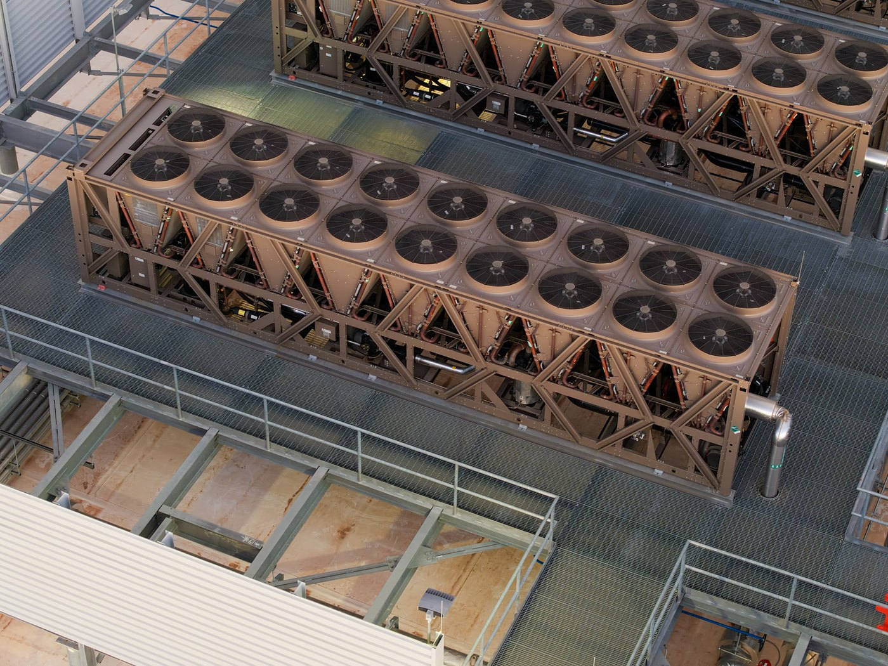
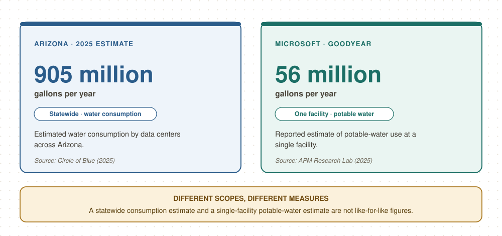

Introduction: The Hidden Cost of a Digital Future
Generative artificial intelligence has become part of everyday life. People use AI tools to write emails, translate documents, create images, and answer questions. These activities may seem entirely digital, but every AI response depends on physical infrastructure. Data centers house servers, processors, cooling equipment, and electrical systems. They require substantial electricity, and many use water to remove heat.
This creates an important environmental policy question: how should communities manage AI infrastructure, especially where water is already limited?
The Phoenix metropolitan area in Arizona offers a useful case study. Located in the Sonoran Desert, the region faces long-term challenges involving groundwater, Colorado River supplies, extreme heat, and rising demand. At the same time, Phoenix and nearby cities have become major locations for data center development. According to APM Research Lab, Phoenix was one of the country's largest data center markets at the time of its February 2025 report. Google, Microsoft, and other major technology companies have established facilities in the region.
The situation is not as simple as saying technology companies are taking water away from residents. Data centers use different cooling systems, and some use little water on-site. Arizona also relies on several water sources, including groundwater, the Colorado River, the Salt River system, and reclaimed wastewater. Data centers are not the only cause of the region's water challenges.
However, their growth raises questions about water allocation, infrastructure costs, and whether local governments have enough information to evaluate new projects. These questions matter when some communities face restrictions on new groundwater-dependent housing while industrial development continues to seek land, electricity, and water.
This blog argues that Arizona should manage data center expansion through transparent water reporting, enforceable local water-use standards, and coordinated water and energy planning. The goal is not to stop AI development, but to ensure that its economic benefits do not come at the expense of long-term water security and community well-being.
1. Why AI Data Centers Need Water and Energy
From digital services to physical infrastructure
A data center houses computing equipment and the systems needed to keep it operating. Some facilities support websites, cloud storage, and business applications. Others support high-performance computing and AI workloads that require powerful processors.
These processors consume electricity and produce heat. If that heat is not removed, equipment may become less efficient, suffer damage, or shut down. Cooling is therefore essential.
One common method is evaporative cooling. Water absorbs heat and evaporates, lowering temperatures. Cooling towers and other evaporative systems can be energy-efficient, but they consume water as some of it leaves the system as vapor. Additional water may be discharged to control mineral buildup. The amount consumed depends on equipment, weather, and operating conditions.
Air-based and closed-loop systems offer alternatives. Some air-cooled facilities use little water for cooling, while closed-loop systems circulate coolant rather than continuously evaporating large volumes. These approaches can reduce direct water consumption, but their overall environmental performance also depends on the electricity supply. A facility that uses little water on-site may still depend on power plants that use water.
A data center's environmental footprint therefore includes both resources used inside the facility and resources used to produce its electricity.
Direct water use is not the whole story
Researchers Pengfei Li, Jianyi Yang, Mohammad A. Islam, and Shaolei Ren examined AI's water footprint in their 2023 paper, “Making AI Less ‘Thirsty’: Uncovering and Addressing the Secret Water Footprint of AI Models”. The paper explains why AI water use deserves attention alongside carbon emissions and electricity consumption. It also emphasizes that water use varies with location, time, and computing technology.
There is no single reliable number for the water cost of every AI query. The answer depends on the model, hardware, cooling system, electricity source, and local weather. Estimates for one facility should not automatically be applied to all AI services.
Another important distinction is the difference between water withdrawal and water consumption. Withdrawal refers to water taken from a source, some of which may later be returned. Consumption refers to water not returned to the same water system in a usable form within the relevant period, often because it evaporates or becomes unavailable elsewhere. The terms are not interchangeable.
The water-energy relationship also works in both directions. Data centers need electricity to operate cooling systems, while electricity generation can require water. Policymakers must therefore consider the water-energy nexus: the connections between water supply, electricity production, cooling technology, and environmental impact.
Why location matters
A gallon of water does not have the same environmental significance everywhere. In a region with abundant water, a new industrial user may create relatively little local pressure. In a desert region facing competing demands, the same use may deserve closer scrutiny.
Phoenix's hot summers create additional challenges. Extreme heat can increase cooling needs and put pressure on the electrical grid. Meanwhile, population growth and economic development create demand for housing, businesses, public services, and water infrastructure.
The key question is not simply how much water one data center uses. It is whether its water source is sustainable, whether demand is concentrated during periods of high stress, and whether the region can support it without unacceptable costs.

2. Phoenix and Mesa: Growth in a Water-Constrained Region
A growing data center market
Phoenix has several advantages that attract data center developers. It has a large metropolitan economy, connections to major fiber-optic networks, available development sites in parts of the region, and a climate that can be managed through engineered cooling systems. State tax incentives have also supported the industry.
The Arizona Commerce Authority's Computer Data Center Program has offered qualifying businesses tax exemptions on eligible computer equipment and related purchases. Such incentives can encourage investment, but they also raise a question: what public benefits should communities expect in return for supporting an industry that requires substantial infrastructure?
Data centers can bring construction activity, investment, and demand for specialized services. However, their economic benefits should be evaluated alongside electricity demand, water use, land requirements, and public infrastructure costs. Job creation and the costs borne by local governments also matter.
Mesa illustrates this complexity. Google broke ground on a data center in the city in 2023, according to APM Research Lab. A separate project discussed in a 2021 Data Center Dynamics report involved a developer operating through Redale LLC. These projects should not be treated as the same development. Their ownership, design, and water arrangements must be established separately.
This distinction matters because public discussions sometimes combine different projects into one story. A claim about one site's water agreement cannot automatically be applied to another.

What does Arizona's groundwater policy actually restrict?
The groundwater debate is often presented as a direct conflict between housing and data centers. There is a real policy issue, but the legal details matter.
In June 2023, Arizona released a new groundwater model for the Phoenix Active Management Area. It found that legally available groundwater would be insufficient to meet all projected demand over the next 100 years under the modeled assumptions. The state consequently stopped issuing new Certificates of Assured Water Supply for subdivisions relying on local groundwater in the affected area.
However, this is not a blanket ban on new housing across metropolitan Phoenix. As explained by the Kyl Center for Water Policy at Arizona State University, most of the metropolitan population is served by designated water providers. Those providers must demonstrate long-term water availability and can continue serving development under applicable rules. The restrictions more directly affect certain areas that depend on local groundwater to qualify new subdivisions.
This does not eliminate the policy concern. Some housing developers face additional barriers when groundwater cannot support a long-term water supply demonstration, while industrial projects may follow different approval processes and water arrangements.
The central question is whether these differences are justified by water sources, legal requirements, infrastructure, and public benefits. Housing and data centers are not interchangeable water users, but officials should explain why each project is approved, which water source it relies on, and how its demand fits into regional planning.
How large is data center water use?
Data on individual data centers can be difficult to obtain. Companies may publish global sustainability reports, but global totals do not reveal how much water a specific Arizona facility uses. Local reporting may also describe proposed rather than actual consumption.
One regional estimate helps illustrate the potential scale. In April 2025, Circle of Blue cited an estimate that Arizona data centers would consume approximately 905 million gallons of water in 2025, equivalent to about 2,777 acre-feet. This was an estimate, not a final audited measurement. The report placed it at less than one-tenth of one percent of Arizona's overall annual water use.
That statewide share is relatively small. It is inaccurate to describe data centers as the main cause of Arizona's water problems. Agriculture, urban growth, and the broader regional water system remain central to the state's challenges.
Yet statewide totals can hide local pressure. A facility may have a modest effect on the state's total water budget while placing a larger demand on one utility, service area, or groundwater source. Timing also matters because water and electricity systems must meet demand where and when it occurs.
APM Research Lab's 2025 investigation described an estimate that Microsoft's Goodyear data center would use around 56 million gallons of potable water annually. This was a facility-specific estimate, not a measurement for all Microsoft facilities or data centers. The report also highlighted a transparency problem: the facility's water records were considered proprietary.
A responsible assessment needs more than one number. It needs actual annual consumption, water sources, seasonal patterns, cooling technology, and a clear distinction between projected and measured use.

3. The Environmental and Social Questions Behind the Numbers
Environmental externalities and public costs
In environmental economics, a negative externality occurs when an activity creates costs that are not fully reflected in the price paid by the decision-maker. Water use can create such costs when a project places pressure on a shared resource or requires public infrastructure that the project does not fully pay for.
A data center may pay its water bill and still create broader costs if its growth requires new treatment capacity, pipelines, or additional supplies. Whether these costs are passed to other customers depends on local contracts, rates, and utility regulation. The key question is whether financial arrangements reflect the full cost of serving the facility.
The same principle applies to electricity. Large facilities may require new grid connections, substations, or generation capacity. If these investments are driven mainly by industrial demand, policymakers should examine how costs are divided among developers, utilities, and existing customers.
This is an issue of resource allocation. Water and electricity have alternative uses, and decisions about one large user can influence infrastructure investment and the capacity available for other needs. Transparent accounting helps communities decide whether a project's benefits justify its costs.
Environmental justice and public participation
Environmental justice concerns how environmental benefits and burdens are distributed and whether affected communities have a meaningful role in decisions.
Data centers may bring investment and tax revenue, but their impacts are not always experienced equally. Nearby residents may experience noise from cooling equipment or backup generators. Communities may also worry about utility costs, construction impacts, and cumulative industrial development.
These concerns deserve attention even when a facility's water consumption is small relative to statewide use. The location of a facility, its water source, the distribution of costs, and public access to information all matter.
However, environmental justice arguments should be evidence-based. It would be misleading to claim that data centers have caused all housing affordability problems in Phoenix, or that they have increased a particular neighborhood's water bills, without local evidence. Housing prices have many causes, including interest rates, housing supply, land-use rules, and construction costs.
A stronger argument is that local governments should evaluate cumulative impacts and make evidence available to affected communities. Residents should not have to rely on corporate promises or rumors to understand a project's likely consequences.
Corporate promises and their limits
Technology companies increasingly publish water stewardship commitments. Google reports on its water replenishment and efficiency efforts through its environmental reporting. Microsoft has also announced a closed-loop cooling design intended to consume no water for cooling, with pilot deployments announced for 2026.
These efforts show that water demand is not fixed. Cooling design and operational choices can change a facility's water footprint.
However, corporate sustainability claims need careful evaluation. A company may replenish water in one watershed while using water in another. Replenishment may also occur at a different time from consumption. Such projects can provide benefits, but they do not necessarily replace the exact water used at the same place and time.
Similarly, “zero-water cooling” usually refers to water used for cooling within a facility. It does not mean the facility has no water footprint. Water may still be used for sanitation, cleaning, and other activities, while the electricity supply may involve water consumption at power plants.
Companies should disclose the boundaries of their claims, distinguishing on-site cooling water, total facility water use, electricity-related water use, and replenishment projects. Independent verification would make these disclosures more useful.
4. What Existing Policies Can and Cannot Do
Local rules are a starting point, not a complete solution
Arizona municipalities have begun responding to data center growth, but their policies differ in scope.
Chandler adopted Ordinance No. 5033, which took effect in January 2023. According to the City of Chandler's official announcement, it addresses zoning, communication with affected residents, noise studies, noise mitigation, and backup generator testing. It should not be described as the city's water-use limit.
A separate Chandler water policy limits data center water use to 115 gallons per day per 1,000 square feet, according to Circle of Blue's 2025 reporting. Additional water needs must be addressed through an outside source under that policy. This illustrates why policy analysis must examine the actual scope of each rule rather than treating all local regulations as one comprehensive law.
Marana, another Arizona community, adopted a measure prohibiting its water department from supplying data centers with potable water, as reported by Circle of Blue. Such rules can reduce demand for drinking water, but their effectiveness depends on alternative supplies and their environmental impacts. Reclaimed water can be useful where suitable infrastructure exists, although transporting and treating it still require investment.
No single cooling solution works equally well at every site. Air-based cooling can reduce direct water demand, while some systems may require more electricity under certain conditions. Reclaimed-water cooling reduces demand for potable water but still consumes water through evaporation. Closed-loop designs can substantially reduce cooling water consumption, though their actual performance should be measured.
Local governments should set clear outcomes and reporting requirements while allowing developers to demonstrate how their systems meet those requirements.
The importance of indirect water use
Many discussions of data center sustainability focus on water used inside facilities while overlooking water associated with electricity generation.
A 2026 report by Ceres, Water Behind the Watts: The Hidden Risk of Powering Data Centers, examines this issue across seven states, including Arizona. It estimates that electricity generation supporting data centers in those states depends on about 3.4 trillion gallons of freshwater withdrawals annually.
This is a modeled estimate of withdrawals across the states covered by the report, not a direct measurement of water consumed by Arizona data centers alone. It should not be treated as if every gallon were permanently lost.
Even with these limits, the finding has important implications. A facility that reduces direct water use may still rely on electricity from water-intensive power plants. Its indirect footprint depends on the actual electricity mix, generation technologies, and the time and location of demand.
Water and energy planning should therefore be coordinated. Utilities and operators should assess how new electricity demand affects grid reliability and water resources. Renewable electricity can reduce some pressures, but its broader water impacts and supporting infrastructure should also be considered.
5. Three Policy Recommendations for Arizona
The goal should be to manage data center growth, not to make an unsupported choice between technology and the environment. Three reforms would improve decision-making while allowing efficient facilities to operate.
Recommendation 1: Require transparent, facility-level water reporting
Arizona should establish consistent reporting requirements for large data centers, working with local governments, utilities, and relevant state agencies.
Reports should include:
- Annual water withdrawals and consumption, reported separately.
- Water sources, including potable water, groundwater, surface water, and reclaimed water.
- Water used for cooling and other facility operations.
- Monthly or seasonal demand to identify peak use.
- Expected water demand at full buildout, separated from measured use.
- Electricity consumption and, where credible data are available, estimates of water associated with electricity generation.
- Replenishment commitments, including location, timing, and measurement methods.
Reports should use consistent definitions and undergo independent verification. Commercially sensitive details can receive appropriate protection, but basic information about major facilities' environmental impacts should be public.
This reform would help residents compare facilities using consistent measures and help utilities plan capacity and identify projects that may create local pressure.
Recommendation 2: Use water standards that reflect local conditions
Arizona should encourage local governments to establish enforceable water-use standards for new data centers based on local water-system capacity and risk.
Cities could require developers to demonstrate that their proposed water sources are sustainable over the relevant planning period. They could prioritize reclaimed water where suitable infrastructure exists and where its use does not create unacceptable impacts elsewhere. Potable water could be reserved for essential uses when feasible alternatives are available.
However, requiring every data center to use 100 percent reclaimed water may not be practical everywhere. Some areas lack the necessary pipelines or treatment capacity, and building infrastructure can be costly. Reclaimed water is also not impact-free simply because it is not drinking water.
A better policy would set clear performance standards, require a credible water-supply plan, and make developers responsible for reasonable infrastructure costs incurred primarily to serve their projects. Water-intensive cooling systems should face stronger scrutiny where supplies are stressed, while low-water systems should receive appropriate recognition.
Rules should also be applied transparently across comparable industrial users. If one type of development faces stricter requirements than another, officials should explain the legal and hydrological reasons.
Recommendation 3: Evaluate water and electricity together
Before approving a large data center, local governments and utilities should evaluate both direct water demand and the electricity required to operate it.
Assessments should cover peak electricity demand, expected power sources, the role of water-intensive generation, and cooling design. Developers should explain how they will reduce demand during extreme heat or grid stress where practical. Utilities should disclose how new infrastructure costs will be allocated.
Clean energy procurement, energy efficiency, storage, and flexible operations can help reduce some pressures. However, renewable electricity should not be treated as an automatic guarantee of zero water impact. Projects should be assessed using transparent assumptions and realistic operating conditions.
Policymakers should also consider cumulative effects. Several facilities may each appear manageable when assessed separately, but their combined demand can create larger challenges for local water and electricity systems. Regional planning should consider the full pipeline of proposed developments, not just the next application.
These reviews should happen before major commitments are made. Once a city has approved a site and invested in infrastructure, it may have fewer options to change the project's design or limit its impacts.
Conclusion: Make AI Growth Accountable
Phoenix and Mesa show why AI's environmental impact cannot be understood by looking only at a computer screen. Data centers require land, electricity, cooling systems, and water. Their impacts depend on technology, local climate, water sources, and development policies.
The evidence does not support the claim that data centers are the main cause of Arizona's water problems. Statewide estimates suggest that their direct water consumption remains a small share of total use. Yet statewide percentages can hide local pressures, while data center growth raises questions about infrastructure costs, transparency, and long-term water security.
The challenge is not simply to choose between AI and water conservation. Development decisions should reflect the real costs and benefits of each project. Companies should disclose their water use, local governments should apply clear and consistent standards, and utilities should plan for water and electricity demand together.
The most responsible data center is not necessarily the one making the strongest sustainability promise. It is the one whose resource use can be measured, whose water supply is sustainable, whose infrastructure costs are fairly allocated, and whose impacts are openly discussed with affected communities.
AI will continue to grow. Arizona has an opportunity to show that technological development and responsible water management can advance together, but this requires public rules, reliable data, and accountability rather than voluntary promises alone.
References
- Arizona Commerce Authority. (n.d.). Computer Data Center Program. https://www.azcommerce.com/incentives/computer-data-center-program/
- Arizona State University, Kyl Center for Water Policy. (2023). Untangling housing affordability and groundwater regulation. Arizona Water Blueprint. https://azwaterblueprint.asu.edu/news/untangling-housing-affordability-groundwater-regulation
- APM Research Lab. (2025, February 27). Are data centers depleting the Southwest’s water and energy resources? https://www.apmresearchlab.org/10x/data-centers-resource
- Ceres. (2026, August 25). Water behind the watts: The hidden risk of powering data centers. https://www.ceres.org/resources/reports/water-behind-the-watts-the-hidden-risk-of-powering-data-centers
- City of Chandler. (2023, January 11). Chandler’s data center ordinance now in effect. https://www.chandleraz.gov/news-center/chandlers-data-center-ordinance-now-effect
- Circle of Blue. (2025, April 2). Data centers a small, but growing factor in Arizona’s water budget. https://www.circleofblue.org/2025/supply/data-centers-a-small-but-growing-factor-in-arizonas-water-budget/
- Data Center Dynamics. (2021, May 25). Huge data center moves forward in Mesa despite Arizona water concerns. https://www.datacenterdynamics.com/en/news/huge-data-center-moves-forward-in-mesa-despite-arizona-water-concerns/
- Li, P., Yang, J., Islam, M. A., & Ren, S. (2023). Making AI less “thirsty”: Uncovering and addressing the secret water footprint of AI models. arXiv. https://arxiv.org/abs/2304.03271
- Microsoft. (2024, December 9). Sustainable by design: Next-generation datacenters consume zero water for cooling. https://www.microsoft.com/en-us/microsoft-cloud/blog/2024/12/09/sustainable-by-design-next-generation-datacenters-consume-zero-water-for-cooling/
- Google. (2025). Environmental report 2025. https://sustainability.google/reports/google-2025-environmental-report/
Editorial note on data: Figures in this blog are reported estimates with different geographic and measurement boundaries. Statewide estimates, facility-specific estimates, water withdrawals, water consumption, and future projections should not be treated as interchangeable. The text identifies the source and scope of the main quantitative claims.